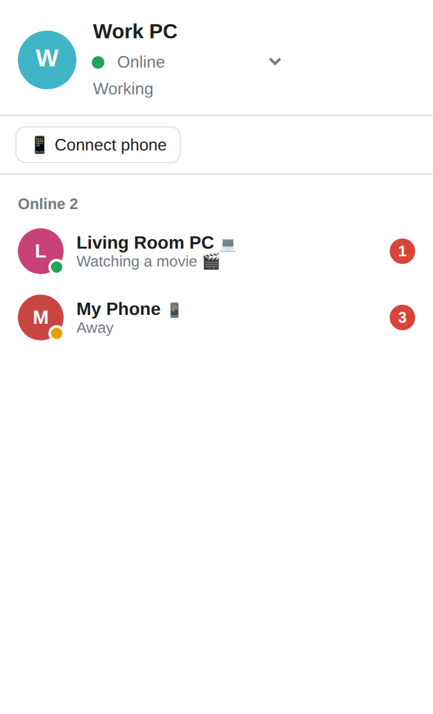

No server, no sign-up, no internet.
Install it and every PC and phone on your network shows up automatically, ready to chat and share files.
All it takes is one router at home or in the office.
PCs and phones running LAN Chat on the same network appear in your list. No IP addresses, no server setup.
Click a contact to open a chat window. New messages pop up with a sound, unless you set yourself to Busy.
Drag and drop, paste, or attach. Received files are saved to Documents\LAN Chat with their original names.
Scan the QR code from any PC and you're in. Nothing to install. Add it to your home screen to use it like an app.
If the other PC is off, your message waits and is delivered the moment it comes back online.
Messages and files travel only inside your local network and are never stored on an outside server.
You only need to set it up once.
Run the installer. It creates a desktop shortcut and sets up the firewall for you.
Install it on other PCs connected to the same router. They'll find each other automatically.
Click 📱 Connect phone on a PC, scan the QR code with your phone camera and enter a name.
A lightweight window on PC, the same interface in your phone's browser.

The installer isn't signed with a paid code-signing certificate, so Windows shows this notice. Click More info → Run anyway to continue. The full source code is available on GitHub.
Yes. As long as the devices are on the same local network, no internet connection is needed.
Received files go to Documents\LAN Chat, and chat history is kept on each PC in %APPDATA%\LANChat. Nothing is sent to an outside server.
Both Android and iPhone work. Scan the QR code from a PC and LAN Chat opens in your browser. A phone can chat while the PC it joined through is on; messages that arrive while it's away are waiting when you reconnect.
The installer is for Windows. On Mac or Linux you can join from the browser just like a phone, or run it from source with Python.